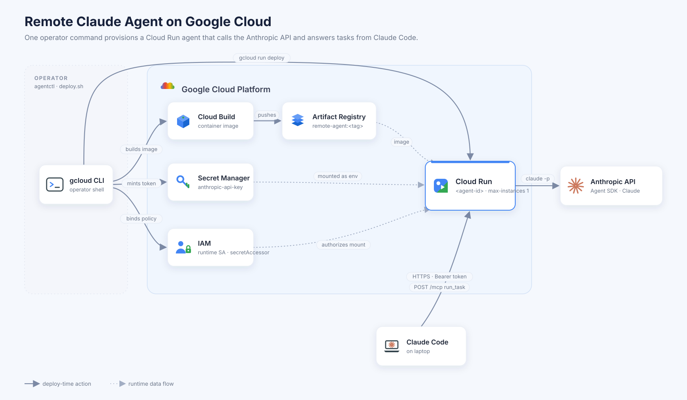

A minimal MCP server that exposes a remote Claude Code agent over HTTP. Your laptop's Claude Code calls one tool — run_task — to delegate a whole, self-contained job to an agent running on Cloud Run.
sk8 runs claude headless on a remote box and returns the final answer.
It's deliberately tiny: synchronous and blocking — no queue, no streaming, no status polling.
Fire a task, get the result.
The remote agent runs your prompt in its cwd and hands back the final text answer. That's the whole API surface.
Customize each agent per profile — extra Python packages, bundled Claude Code skills, and a tool / MCP / system-prompt spec compiled into the image at build time.
server_sdk.py drives the agent loop through the Claude Agent SDK — a typed async message stream with structured permission control.
GCS-backed signed URLs move inputs and artifacts around run_task without bloating the prompt or hitting the 32 MB request cap.
Install the CLI, provision an agent on Cloud Run, and wire it into Claude Code.
# install the `sk8` command from this repo (uv / pipx / pip all work)
uv tool install .
# build the agent image (first time) + provision on Cloud Run
sk8 create iris --build
# custom deps / skills / tools via a profile
sk8 create iris --profile ./profiles/data-analyst --build# `sk8 create` prints the exact `claude mcp add ...` line — run it, then:
claude mcp list # sk8 should show as connectedThen, in a Claude Code session on your laptop:
Use the sk8 run_task tool with prompt:
"list the files in the current directory and summarize them"Scriptable for humans and agents alike — it emits JSON so a running agent can spawn and register its own sub-agents.
sk8 create iris --build # build image (first time) + provision
sk8 create iris # subsequent agents reuse the image
sk8 create iris --json # {url, token, mcp_add_command} for agents
sk8 create iris --dry-run # preview the gcloud commands offline
sk8 list # list deployed agents in the region
sk8 delete iris --yes # tear down service + token secret
sk8 suggest 5 # propose adjective-noun names
The GCP services (Cloud Build, Artifact Registry, Secret Manager, IAM, Cloud Run) and the
agent lifecycle — image build → token mint → a run_task call triggering Cloud Run.

run_task blocks until the agent finishes (up to a 600s timeout). No streaming, no progress, no status to poll.
No queue or concurrency management — fire tasks serially.
Each call is a fresh headless claude with no memory of prior tasks. Put all context in the prompt.
claude can do anything the host user can.
Treat reaching this endpoint as equivalent to a shell on the box — secure it accordingly.